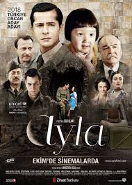
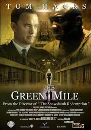
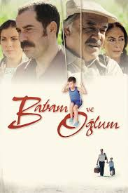

Dram Filmleri
Dram filmleri, izleyiciyi duygusal olarak etkileyen, yaşamın gerçekçi yönlerini ele alan yapımlardır. Aile, kayıp, umut, mücadele gibi konuları işler.

Ayla
Ayla
Kore Savaşı sırasında küçük bir kızı kurtaran Türk askeri Süleyman Dilbirliği'nin, Ayla ile kurduğu güçlü bağ yürekleri sızlatır.

Yeşil Yol
Yeşil Yol
İdam mahkumlarının kaldığı hapishane koğuşunda görevli gardiyan Paul, doğaüstü güçlere sahip masum bir mahkumla karşılaşır.

Babam ve Oğlum
Babam ve Oğlum
1980 darbesi sonrası ailesiyle bağları kopan Sadık, yıllar sonra hasta oğlu Deniz’i babasına emanet etmek zorunda kalır.